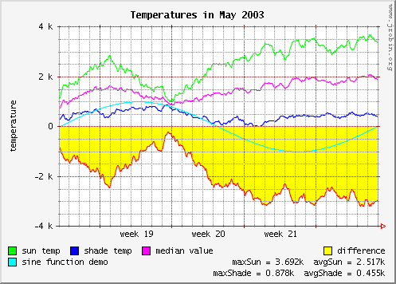

Simple demo
There is a simple Demo class in the demo library (jrobin-demo-{version}.jar) which can be used to test JRobin . This class uses many important features from JRobin, including graph creation in several different formats. Use it to check if JRobin works as expected on your platform. To run the demonstration execute the following command from the command line:
java -cp jrobin-demo-{version}.jar \
org.jrobin.demo.Demo
or:
java -Djava.awt.headless=true -cp jrobin-demo-{version}.jar \
org.jrobin.demo.Demo
...if your X-server is not active (installed).
Demonstration consists of the following steps:
- Sample RRD database demo.rrd is created (with two GAUGE data sources).
- RRD file is updated about 20.000 times, simulating one month of updates with the time step of max. 4 minutes.
- Last update time is printed.
- Sample fetch request is executed, fetching data from RRD file for the whole month.
- Fetched data is printed on the screen.
- RRD file is dumped to file demo.xml (XML format).
- New RRD file demo_restored.rrd is created by importing the generated XML file.
- RRD graph for the whole month is created in memory from the restored file.
- Graph is saved in PNG, GIF and JPEG format (files demo.png, demo.gif and demo.jpg are created).
- All files are closed.
- Log file demo.log is created. Log file consist of RRDTool commands - execute this file as a Linux shell script to compare RRDTool's and Jrobin's fetch results (should be exactly the same).
All files will be created in jrobin-demo directory under your $HOME directory. Exact location is OS dependent (C:\Documents and Settings\Administrator\jrobin-demo on Windows or ~/jrobin-demo on Unix/Linux systems.
If everything goes well, no exceptions are thrown and your graph should look exactly like this one:

Copyright © 2003, 2004 Sasa Markovic & Arne Vandamme. All Rights Reserved.